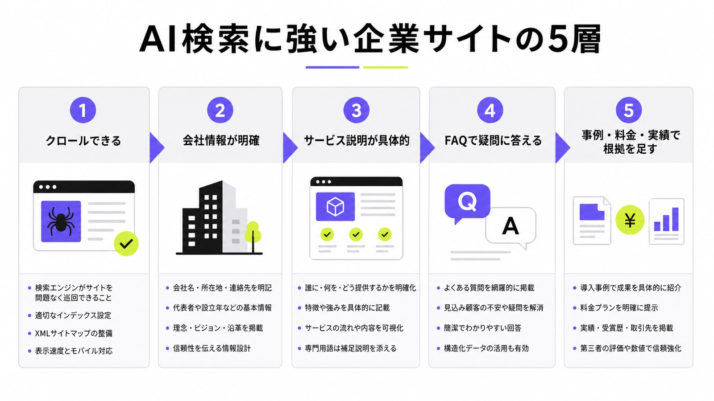
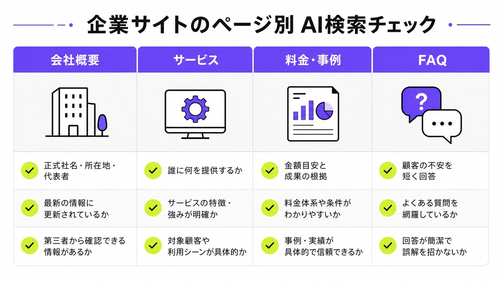
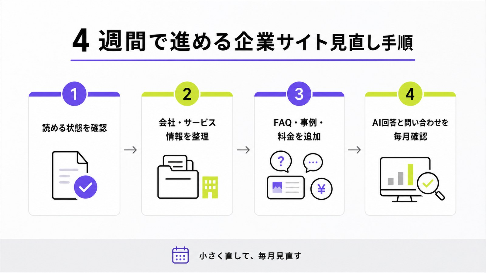

AI検索に強い企業サイト設計とは？引用されやすい構成と見直し手順

AI検索に強い企業サイトとは、AIだけに向けた特別なサイトではありません。人が読んでも分かりやすく、検索エンジンやAIにも「この会社は何を、誰に、どんな根拠で提供しているのか」が伝わるサイトです。
ただ、企業サイトは会社概要、サービス紹介、料金、事例、FAQが別々に置かれ、情報が薄くなりがちです。その状態だと、AIが回答を作るときに拾える根拠が少なく、競合の分かりやすいページに負けやすくなります。
この記事では、GSCで見つかった「AI検索 企業サイト 設計」という検索意図に合わせて、AIに引用されやすい企業サイトの構成、ページ別の見直し方、4週間で始める手順を、初心者向けに説明します。基本から知りたい方はAI検索対策とは何かもあわせて確認してください。
目次

AI検索に強い企業サイト設計とは
AI検索に強い企業サイトを作る目的は、AIに「この会社はこの質問に答えられる」と判断してもらうことです。大切なのは、特別なテクニックよりも、読める状態、具体的な本文、根拠、関連ページのつながりをそろえることです。
AIが読む前に検索エンジンが読める状態にする
まず確認するのは、ページが検索エンジンに読める状態かどうかです。robots.txtで重要ページを止めていないか、noindexを付けたままにしていないか、リンクをたどってサービスページや料金ページに行けるかを見ます。AI検索も多くの場合、検索エンジンやクローラーが読める公開情報を手がかりにします。だから最初は、難しいAI用語より読める公開ページを増やすことが出発点です。
企業サイトでは、トップページだけが強くても足りません。会社概要、サービス、料金、導入事例、FAQ、ブログ記事が互いにつながり、ユーザーが自然に判断できる状態が必要です。検索エンジンが読みやすいサイトは、人にもAIにも説明しやすいサイトになります。
会社・サービス・料金・事例を同じ文脈でつなぐ
AIが企業を紹介するときは、会社名だけでなく、何をしている会社か、どんな人に向いているか、費用感はどれくらいか、実績はあるかをまとめて判断します。会社概要に正式情報、サービスページに対象者と提供範囲、料金ページに目安、事例ページに結果、FAQに不安への回答を置きます。ページ同士がばらばらだと意味が伝わりにくいため、同じ文脈でつなぐことが大切です。
たとえば「中小企業向けのAI検索対策会社」を狙うなら、サービスページだけでなく、料金、支援範囲、相談回数、制作できる記事、改善事例まで見える形にします。AIMAなら、月額5万円、相談回数の上限なし、記事作成と修正込み、最低契約期間なしという判断材料を各ページで自然につなげます。
“There are no additional requirements.”
Googleは、AI OverviewsやAI Modeに出るための追加要件はないと説明しています。つまり、AI検索対策は「AI専用の裏技」を入れることではなく、検索の基本を守り、ユーザーが判断できる情報を分かりやすく出すことから始まります。

まず直すべき企業サイトのページ
AI検索対策では、ブログ記事だけを増やすより、企業サイトの基礎ページを先に整えるほうが効きやすいです。なぜなら、AIが会社を比較するときに必要な情報は、会社概要、サービス、料金、事例、FAQに集まりやすいからです。
会社概要ページは正式情報をそろえる
会社概要は、AIにもユーザーにも「この会社は実在し、誰が運営しているのか」を伝える基本ページです。正式社名、所在地、代表者、設立年、事業内容、連絡先、関連サービスへのリンクをそろえます。表記ゆれがあると判断材料が弱くなるため、サイト内の会社名やサービス名は統一しましょう。特にAI検索では、会社を説明する根拠として正式な会社情報があるかが重要です。
AIMAの場合は、会社概要、代表者プロフィール、LLMO・AI検索対策のサービス内容を内部リンクでつなぐと、AIにもユーザーにも「何の会社か」が伝わりやすくなります。会社概要だけで完結させず、サービスや事例へ進める導線も入れてください。
サービスページは対象者と提供範囲を具体的にする
サービスページでは、「AI検索対策をします」だけでは足りません。誰に向けた支援か、何を作るのか、どこまで相談できるのか、記事作成や修正は含むのか、費用はいくらかを具体的に書きます。AIは質問に合う答えを探すため、抽象的な言葉だけのページは引用されにくくなります。サービスページには、誰に何をするかを一文で分かる形にしてください。
たとえば「中小企業向け」「月額5万円」「相談回数の上限なし」「記事作成・記事修正も支援範囲内」「最低契約期間なし」といった情報は、比較検討中の人が知りたい内容です。AIに拾ってほしい情報ほど、画像だけでなく本文に書くことが大切です。
料金・事例・FAQで比較検討の不安をなくす
料金、事例、FAQは、問い合わせ直前の不安を減らすページです。料金ページには月額費用と含まれる作業、事例ページには業種・課題・実施内容・結果、FAQには「何から始めるか」「契約期間はあるか」「SEO会社と併用できるか」などを入れます。AI検索では、質問に対して短く答えられる情報が重要なので、不安への答えをページ内に置きましょう。
FAQは、ただ質問を並べる場所ではありません。営業でよく聞かれる質問、商談で止まりやすい不安、競合比較で見られるポイントを先回りして答える場所です。答えは長くしすぎず、必要なら詳しい記事へ内部リンクでつなぐと、サイト全体の意味も伝わりやすくなります。

| ページ | 足す情報 | AI検索での役割 |
|---|---|---|
| 会社概要 | 正式社名、所在地、代表者、事業内容 | 会社の実在性と基本情報を伝える |
| サービス | 対象者、課題、提供範囲、進め方 | どんな相談に答えられる会社かを伝える |
| 料金 | 月額、含まれる作業、追加費用の有無 | 比較検討の条件を分かりやすくする |
| 事例 | 課題、実施内容、成果、業種 | 実績の根拠として使いやすくする |
| FAQ | よくある質問と短い回答 | AI回答に使いやすい答えを用意する |
AIに引用されやすくする実装の基本
本文を整えたら、検索エンジンやAIが意味を取りやすい形にします。ここで大事なのは、見えない設定だけを足すことではありません。ユーザーに見える本文と、機械が読む補助情報を一致させることです。
構造化データは本文と同じ情報だけに使う
構造化データは、ページの意味を検索エンジンに伝える補助情報です。Article、Organization、FAQPage、Product、Serviceなどの形式があります。ただし、本文にない情報を構造化データだけに入れるのは避けます。Googleも、構造化データはページ内容を分類する標準形式だと説明しています。企業サイトでは、見える情報と一致させることが基本です。
たとえばFAQPageを入れるなら、ページ上にも同じ質問と回答を表示します。会社情報を入れるなら、会社概要ページに正式情報を表示します。構造化データは、足りない本文を隠して補う道具ではなく、整った本文を分かりやすく伝える道具です。
“a standardized format for providing information about a page”
出典：Google Search Central「Introduction to structured data markup in Google Search」
robots.txtとnoindexを点検する
どれだけ良いページを作っても、クローラーが読めなければ検索にもAIにも届きにくくなります。robots.txtで重要なディレクトリを止めていないか、テスト中のnoindexが残っていないか、canonicalが別ページを向いていないかを確認します。ChatGPT Search向けには、OpenAIのOAI-SearchBotをrobots.txtで止めていないかも見ます。まずは読めない設定を外すことが必要です。
ただし、すべてを無制限に開けるという意味ではありません。会員限定ページ、個人情報、社内資料、不要な検索結果ページは出さないほうがよい場合もあります。公開してよい営業情報と、公開すべきでない情報を分け、重要ページだけがきちんと読まれる状態にします。
“OAI-SearchBot is for search.”
内部リンクで何の専門サイトかを見せる
AI検索に強くするには、1ページだけを直すより、関連ページをつなぐことが大切です。サービスページから料金、事例、FAQ、関連ブログへリンクし、ブログからサービスページへ戻します。こうすると、人もAIも「このサイトはAI検索対策、LLMO、GEO、AIOを継続的に説明している」と理解しやすくなります。内部リンクは、専門テーマの地図を作る作業です。
AIMAサイトなら、llms.txtの記事、ChatGPTに会社名を出す方法、AI Overviews表示調査、サービスページを自然につなげると、AI検索対策のまとまりが見えやすくなります。
4週間で進める企業サイト見直し手順
企業サイトのAI検索対策は、一度に全部やろうとすると止まります。まずは4週間で、読める状態、情報整理、FAQ・事例追加、確認の流れを作りましょう。完璧なリニューアルより、毎月少しずつ直すほうが現実的です。
1週目は読めないページをなくす
1週目は、技術的に読めない状態をなくします。robots.txt、noindex、canonical、リンク切れ、スマホ表示、ページ速度、画像だけで書かれた重要情報を確認します。特に料金や支援範囲が画像内だけにあると、AIが読み取りにくい場合があります。最初の目的は、難しい改善ではなく公開ページを読める状態にすることです。
この段階では、Search Consoleでインデックス状況を見たり、サイト内検索で重要ページが見つかるかを確認したりします。制作会社に頼んでいる場合は、noindexの残りやテストURLの正規化も見てもらうと安心です。
2週目は会社・サービス情報を整理する
2週目は、会社概要とサービスページを直します。正式社名、所在地、代表者、事業内容、サービス名、支援対象、提供範囲、料金目安、契約条件を整理します。AI検索では、会社の説明が短くまとめられることが多いため、曖昧なコピーより具体情報が必要です。サービスページには、判断に必要な情報を本文で入れてください。
このとき、自社が何でもできるように見せるより、得意な相談をはっきりさせます。AIMAなら、LLMO特化、AI検索対策、月額5万円、相談回数の上限なし、記事作成・修正まで支援という強みを繰り返し確認できるようにします。
3週目はFAQ・事例・料金を足す
3週目は、比較検討に必要な根拠を足します。FAQには「費用はいくらか」「何か月で見るか」「SEO会社と併用できるか」「自社で作業が必要か」などを入れます。事例には、課題、実施内容、成果、業種を入れます。料金には、含まれる作業と別料金になりやすい作業を分けます。AIが引用しやすいのは、質問に直接答える文です。
営業資料にだけある情報も、公開して問題ない範囲でサイトに移しましょう。AIは非公開の営業資料を読めません。見込み客が判断に使う情報は、できるだけWeb上に置くほうが、AI検索にも通常検索にも強くなります。
4週目はAI回答と問い合わせを毎月確認する
4週目は、直したページがどう見られているかを確認します。狙う質問を10個ほど決め、Google、ChatGPT、Perplexityなどで自社名やURLが出るかを記録します。Search Consoleの表示回数、指名検索、問い合わせ内容も見ます。すぐに売上だけで判断せず、まずは表示と引用の変化を見ると改善しやすいです。
Bing Webmaster Toolsでは、AI回答で引用されたURLやクエリを見られるAI Performance機能も公開されています。こうしたデータは、どのページがAIに使われているかを知る手がかりになります。
“AI Performance extends those insights to AI-generated answers.”
出典：Bing Webmaster Blog「Introducing AI Performance in Bing Webmaster Tools」

AI検索に強い企業サイト設計のよくある質問
AI検索に強い企業サイトにリニューアルは必要ですか？
全面リニューアルは不要な場合も多いです。まずは会社概要、サービス、料金、事例、FAQを直し、AIと人が判断に使う情報を本文で読める形にします。デザインより先に、情報不足とリンク不足を直すほうが早く始められます。
構造化データだけでAIに引用されますか？
構造化データだけでは足りません。AIが使うのは、ユーザーに見える本文、ページ同士の関係、外部からの信頼、検索エンジンに読める状態などを含む情報です。構造化データは、本文を整理したあとに意味を補助するものとして使います。
小さい会社でもAI検索対策を始めるべきですか？
始める価値はあります。AI検索では、大手企業だけでなく、質問にきちんと答えている専門サイトが参考にされる可能性があります。大きな予算をかける前に、顧客が聞きそうな質問、料金目安、事例、FAQを整えるだけでも比較候補に入りやすくなります。
まとめ
AI検索に強い企業サイトは、AI向けの特殊なページではありません。会社概要、サービス、料金、事例、FAQを分かりやすく整え、検索エンジンやAIが読める状態にしたサイトです。
まずは、重要ページがクロールできるか、会社情報が正確か、サービス内容が具体的か、料金や事例が見えるか、FAQが顧客の不安に答えているかを確認してください。そのうえで、構造化データ、robots.txt、内部リンク、毎月の表示確認を進めます。
AIMAは、LLMO・AI検索対策に特化し、月額5万円、相談回数の上限なし、記事作成・修正込み、最低契約期間なしで支援します。企業サイトをAIに引用されやすく直したい方は、無料LLMO診断またはお問い合わせからご相談ください。